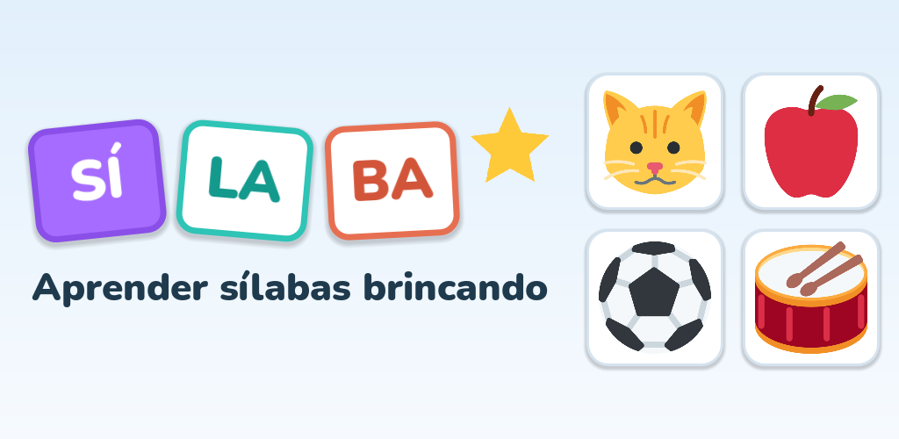
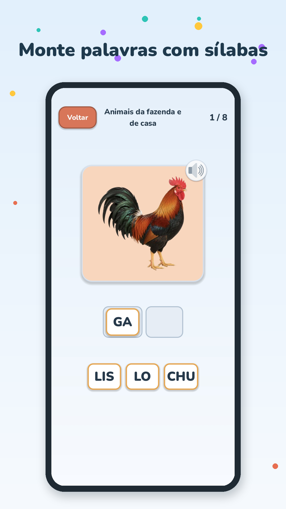
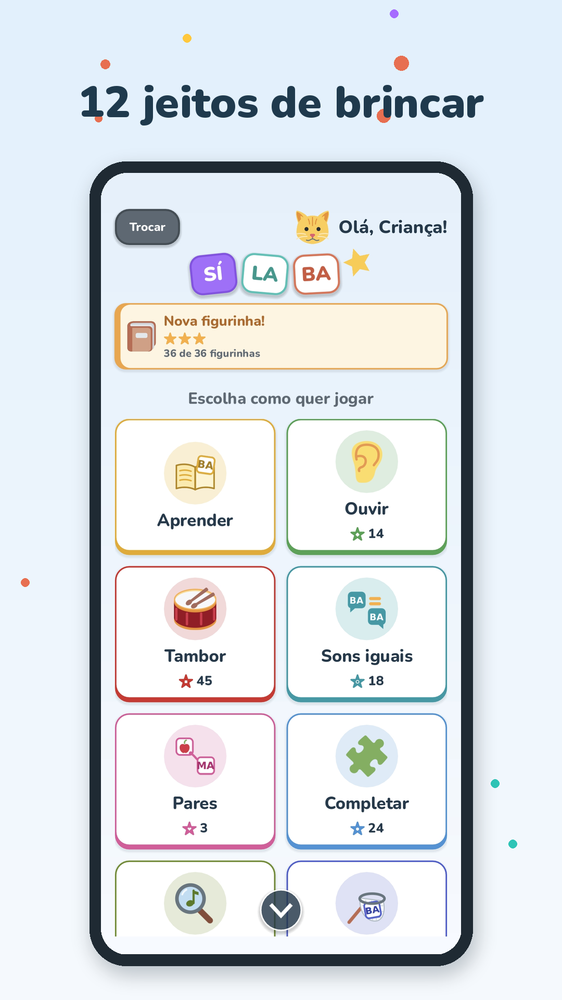
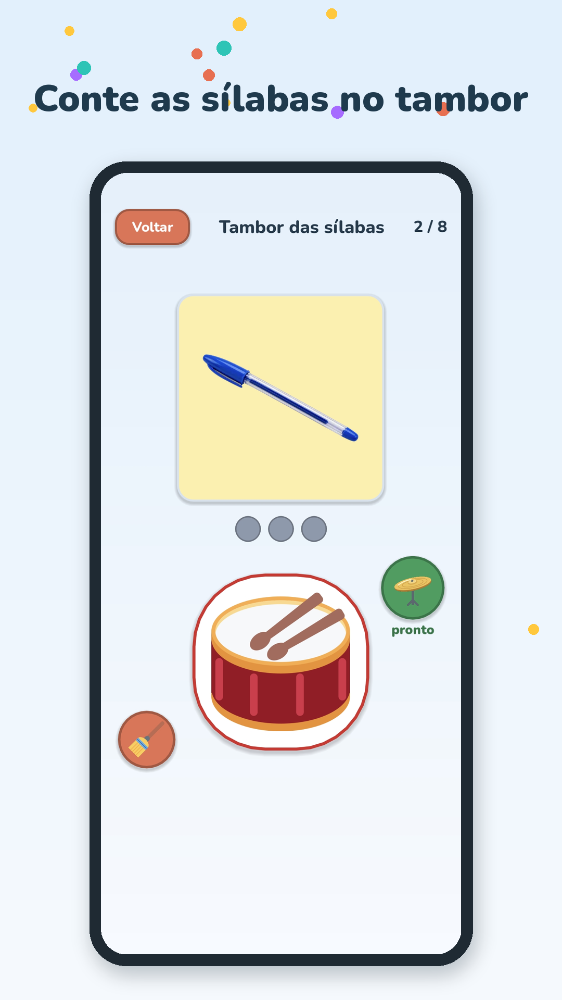

Sí-la-ba
Sí-la-ba
Aprender sílabas brincando
O Sí-la-ba ajuda crianças a descobrir as sílabas de um jeito leve e divertido: elas veem a figura, ouvem a palavra e brincam com as sílabas até formar a palavra certa.



12 jeitos de brincar: Aprender, Ouvir, Tambor, Sons iguais, Pares, Completar, Escute e Ache, Caça-sílabas, Montar, Juntar, Sílaba forte e Desafio.
300 palavras em 15 categorias, com desenho, foto real e voz. Estrelas e um álbum de figurinhas para completar.
Para famílias, fonoaudiólogos e professores: perfis por criança, níveis e modos ajustáveis, letra BASTÃO, minúscula e cursiva, relatórios de acertos e área do adulto com PIN.
Sem anúncios e sem coleta de dados: tudo fica guardado só no aparelho. Funciona sem internet.
Contato
Dúvidas, sugestões ou suporte: solucoeszero5@gmail.com